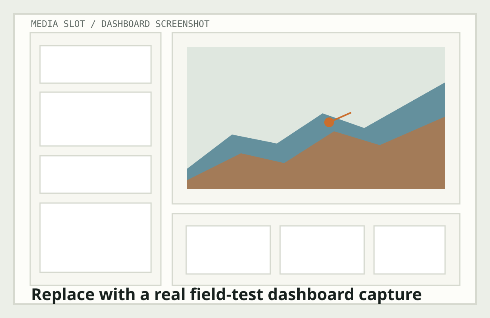
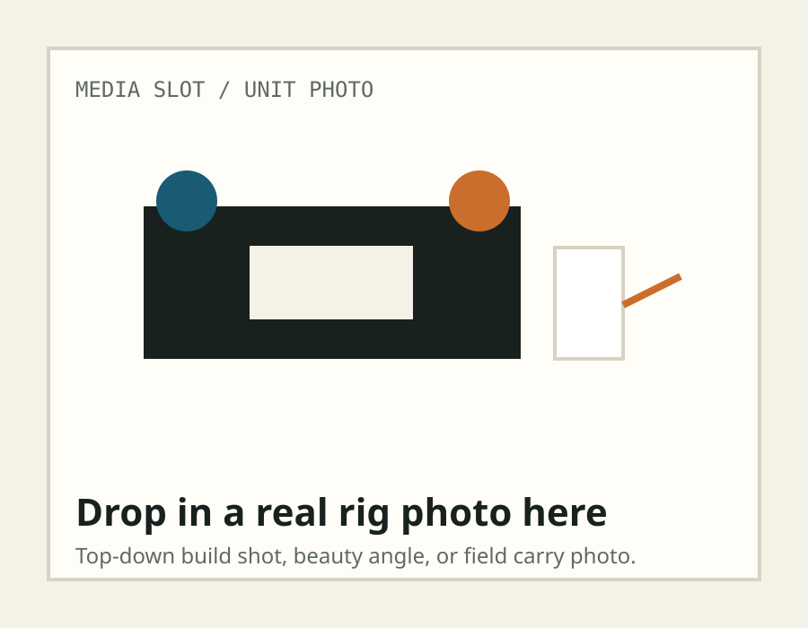
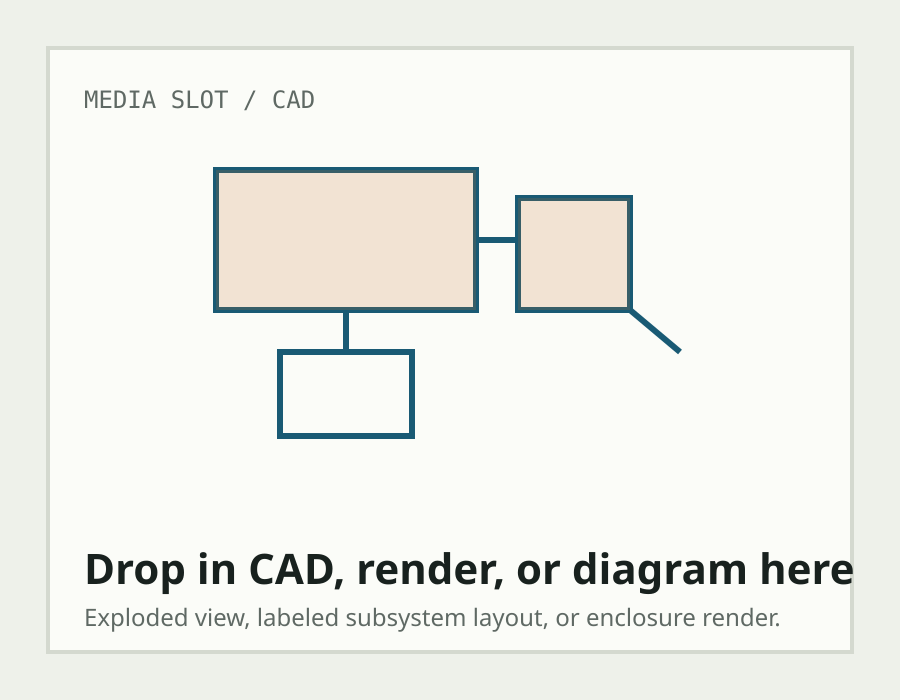
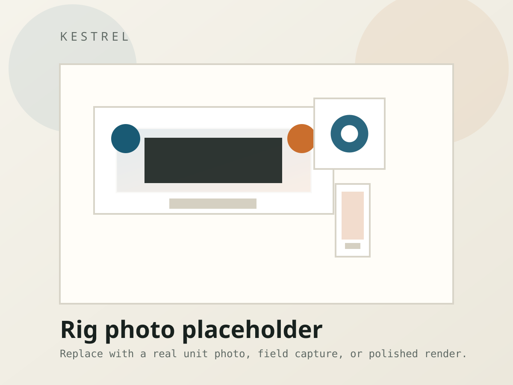

Sensing
The rig captures downward imagery and IMU data on the Pi. The IMU stabilizes attitude estimation while the camera path supplies ground texture for motion and map matching.
Kestrel
Technical Pipeline
System Breakdown
Kestrel is a visual-inertial localization prototype built around a Pi-class runtime. The core path is intentionally pragmatic: downward imagery, IMU attitude, stereo-derived scale, local map matching, and GPS-style NMEA output streamed to a laptop dashboard.

Pipeline
The rig captures downward imagery and IMU data on the Pi. The IMU stabilizes attitude estimation while the camera path supplies ground texture for motion and map matching.
Stereo depth is used as a scale and altitude hint. It is not treated as magical truth; it is one of the runtime signals that helps keep motion estimates from floating completely free.
Frame-to-frame feature tracking estimates short-horizon relative motion. This is the local backbone of the rig when there is enough ground structure to track.
The runtime compares the live downward frame against pre-cached orthophoto tiles from the mission area. A verified match provides an absolute correction to keep the pose from drifting indefinitely.
The Pi emits GPS-style NMEA sentences plus debug telemetry over the network. The laptop dashboard consumes that stream and shows pose, diagnostics, and camera panes in one view.
Rationale
The project intentionally favors classical computer vision on the Pi over heavyweight model inference in the critical path. That makes the runtime easier to reason about and easier to demo honestly.
The map side is standardized into local tiles so the runtime is not tied to any one county or state imagery API. The ugly ingestion work happens before the demo, not during it.
The dashboard shows pose, NMEA, stereo, VO, geo-match, and raw debug packets at the same time. That keeps the demo transparent instead of turning it into a black-box claim.
Data Products
Kestrel produces a live pose estimate, GPS-style NMEA sentences, debug telemetry, and a dashboard map overlay with subsystem diagnostics.
$GPGGA,hhmmss,lat,NS,lon,EW,1,10,0.8,61.2,M,,,*CS $GPRMC,hhmmss,A,lat,NS,lon,EW,14.8,92.1,ddmmyy,,,*CS
Use this section for your actual build-process notes once you have the field story locked: enclosure assembly, camera mounting, calibration, Pi bring-up, tile ingestion, and final demo wiring.
Build notes placeholder: - mechanical layout - optics and baseline - Pi and power path - IMU and camera integration - field tuning and validation - demo workflow
Visual Slots

Replace with a real field photo of the assembled unit.

Replace with the CAD render or a labeled hardware diagram.

Replace with a top-level system architecture slide or hero shot.